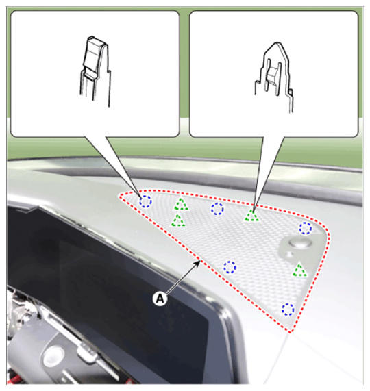
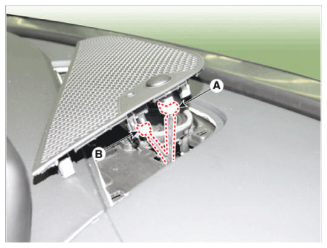

LEMON Manuals
: Even more car manuals for everyone: 1960-2025
Home
>>
Hyundai
>>
2022
>>
Elantra N Line, Standard Trans
>>
Repair and Diagnosis
>>
Accessories & Equipment
>>
Headlights
>>
Auto Lighting Control System (Except HEV)
>>
Auto Light Sensor
>>
Repair Procedures
>>
Removal
Repair Procedures: Removal
NOTE:
Take care not to bend or scratch the trim and panels.
Disconnect the negative (-) battery terminal.
Using a remover and remove the crash pad center speaker grille (A).

Courtesy of HYUNDAI MOTOR AMERICA
Disconnect the auto light sensor connector (A) and security sensor connector (B).

Courtesy of HYUNDAI MOTOR AMERICA